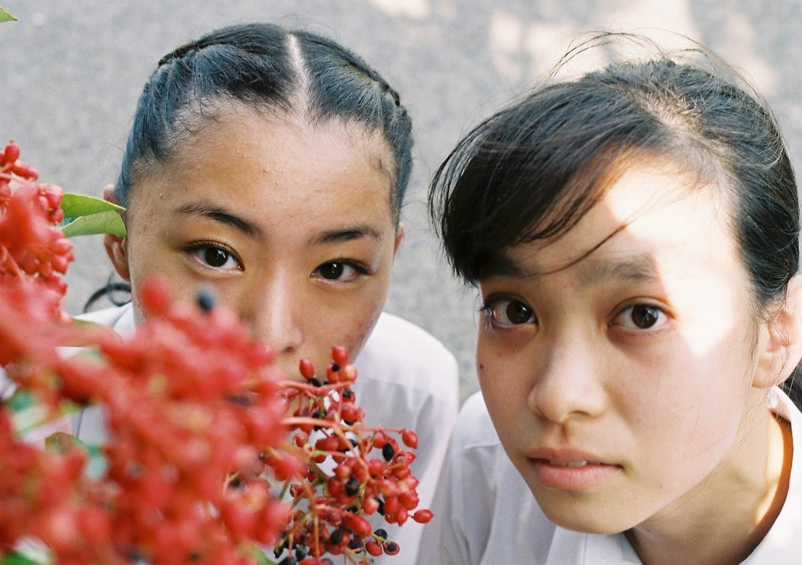

Welcome to My World
About Me
15歳の頃に写真を始め、2019年高校1年生の時に全日本写真展にて銅賞を受賞。写真に留まらず、詩や映像、絵、銅版画で抒情を表現。幼い頃にみた自らが惑星になる夢を手掛かりに、精神が安らぎ強く在ることができる場所、”花園”という概念を可視化するべく活動中。
My Works
こちらは私の作品集です。



Contact
お問い合わせはお気軽にどうぞ。